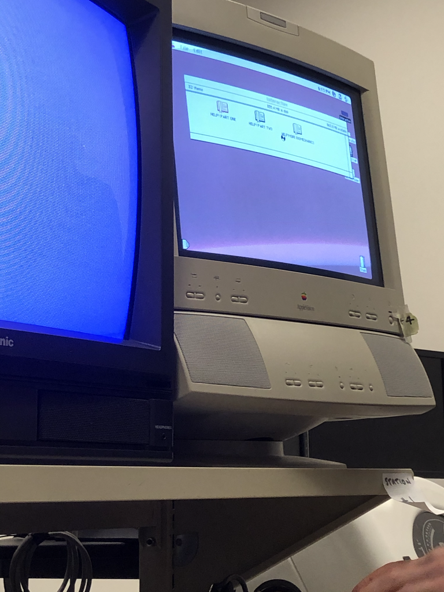

HELP! The Higher Education Learning Program
Welcome to HELP, the Higher Education Learning Program! This project was created by Braden Ash, Ricardo Barraza, Jack Riley, and Noah Thomas for the University of Puget Sound’s Computer Science Capstone. The end goal of this project was to replace and update an online Biomechanics course created using a 1980s copy of Adobe Authorware. The current version of the system is up and running at helppugetsound.com, and can be tested by making a free account and enrolling in a demo class using the class code DEMO.
Note: this page is copied from the the github repo.
Table of Contents
Background
Due the the nature of the University of Puget Sound’s Occupational Therapy Program, students often found themselves needing review for a handful of introductory biomechanics topics. However, because each student needed to review a different topic, there was no way the instructor could refresh them on every topic.
Thus, the original Help! program was born. The instructor of this course created a multi-part review system covering all introductory topics essential to the students’ success in the program using Adobe Authorware. This multimedia study tool quizzed students on different biomechanical functions by asking them to watch certain clips of the Beatle’s movie Help! and analyze what was happening in their bodies.
This software was uploaded onto 8 Power Macintosh Computers. However, almost 30 year later, only one of these computers remains semi-functional.

In late Fall 2020, the instructor asked Computer Science students to develop a more modern and flexible version of this software, resulting in this project, the Higher Education Learning Program (HELP).
Project Details
After taking all of the client’s needs into account, this project was developed with flexibility in mind - rather than content/helpally creating and populating a website, professors can dynamically create courses with chapters, sections, and questions. Each page can flexibility hold text, images, videos, and a quiz. Each quiz is populated with any combination of multiple choice, short answer, drag and drop, and point and click questions.
Login and Account Creation
Users are immediately greeted with a dynamic home screen, highlighting some of the many use cases with this program. After entering the site, users are prompted to either create or login to an account. There are two account types: student and professor. Students can only enroll in classes, while professors can manage, create, and collaborate on these classes. This site is also equipped with password management, allowing users to reset their password via automated email.
| HELP Splash Screen | Login Page |
|---|---|
 |
 |
Professor Home
Professors and students are each welcomed to the app with a home screen, allowing them to view their list of classes, along with basic profile editing functionality. Every professor view is also populated with question mark blocks, showing tip popups explaining how to perform actions relevant to the content of the page. Professors can also access a full tutorial from the navbar at any time.
| Professor Home Page | Tip Popup Example |
|---|---|
 |
Creating Classes, Chapters, and Sections
Once a professor navigates to the class they want to edit, they are presented with the edit class page. Each class is made up of a set of chapters, which is made up of a set of sections. Each chapter and section must be published in order for students to be able to see that content. This allows professors to create content ahead of the time they want to roll it out to their students.
| Edit Class Page | Edit Chapter Page |
|---|---|
 |
Professors can also edit sections. The section page is where the students will spend most of their time using the program, and as previously stated, holds a flexible amount of content. A section page is broken into 3 blocks: text, video, and quiz, in that order. Each section can hold an unlimited amount of content. A screenshot of the edit section page can be seen here, as the image is too long to be visible in this readme.
{kind=link}
Creating a Question
There are four different variations of question elements. These elements can be mixed and matched in a quiz element. When creating a new quiz element, professors are prompted with this popup window asking for basic question details.
After creating a question, professors can create the answers. Each question type can have multiple correct answers, and will not be visible if there are none. A screenshot of the edit question section page can be seen here, as the image is too long to be visible in this readme.
{kind=link}
Previewing the Section Page
After populating a section, a professor can preview their work from a student’s point of view. This project allows for easy switching between professor and student views, ensuring that a professor’s published page will meet their expectations once it goes live. If a professor populated a page using the same data from the project screenshots, their section page preview would be populated like this:
Published Question Types
As previously stated, there are four types of questions: Multiple Choice, Short Answer, Drag and Drop, and Point and Click. All of these are housed in the quiz box at the bottom of the section page. Once a student presses the start quiz button, the first question is presented. The student’s progess is automatically tracked throughout the quiz in a set of colored bubbles - grey = not taken, red = incorrect, orange = correct (second try or later), and green = correct (first try)
| Multiple Choice Question | Short Answer Question |
|---|---|
| Drag and Drop Question | Point and Click Question |
After submitting an answer to a question, the student is presented with a popup explaining why their answer was correct or incorrect. As this is a learning tool, it is important that students understand why their answer was marked the way it was, and are granted multiple tries to reach the right answer.
| Correct | Partially Correct | Incorrect |
|---|---|---|
Glossary
Each class also has a custom glossary that allows students to look up words important to their course. This glossary is accessible from the navbar on any page, and professors can edit the glossary from the chapter homepage at any time.
| Glossary Creation | Published Glossary |
|---|---|
Built With
-
Flask - Python framework and boilerplate
-
SQLite - Database
-
Amazon Web Services - Web hosting
Authors
All creators worked together in all aspects of this project. However, each person had a few central focuses for this project.
-
Braden Ash - glossary, data translation and population, section page (text)
-
Ricardo Barraza - database manager, database integration, publishing and uploading, professor portal
-
Jack Riley - flask guru, account and form system, professor and student portal, web hosting, quiz development (drag and drop, point and click), tooltips
-
Noah Thomas - front end framework, section page (video, quiz) and professor integration, quiz development (multiple choice, short answer), tooltips, readme
Acknowledgments
-
David Chiu, our capstone professor
-
George Tomlin, our patient and optimistic client
-
University of Puget Sound Tech Services, ripping our copy of the film
-
Occupational Therapy and Math/CS Departments, for their continued support throughout this project’s development